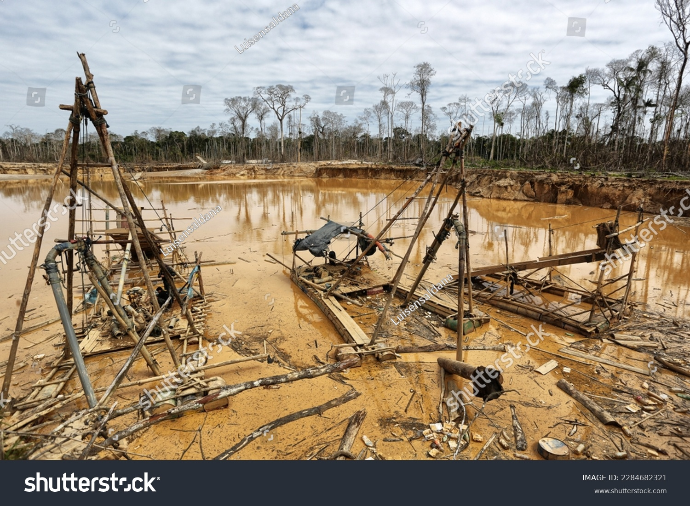
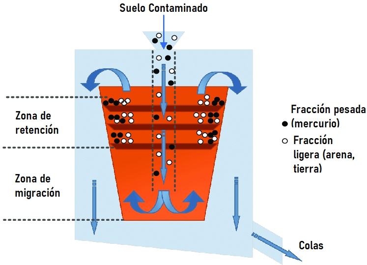
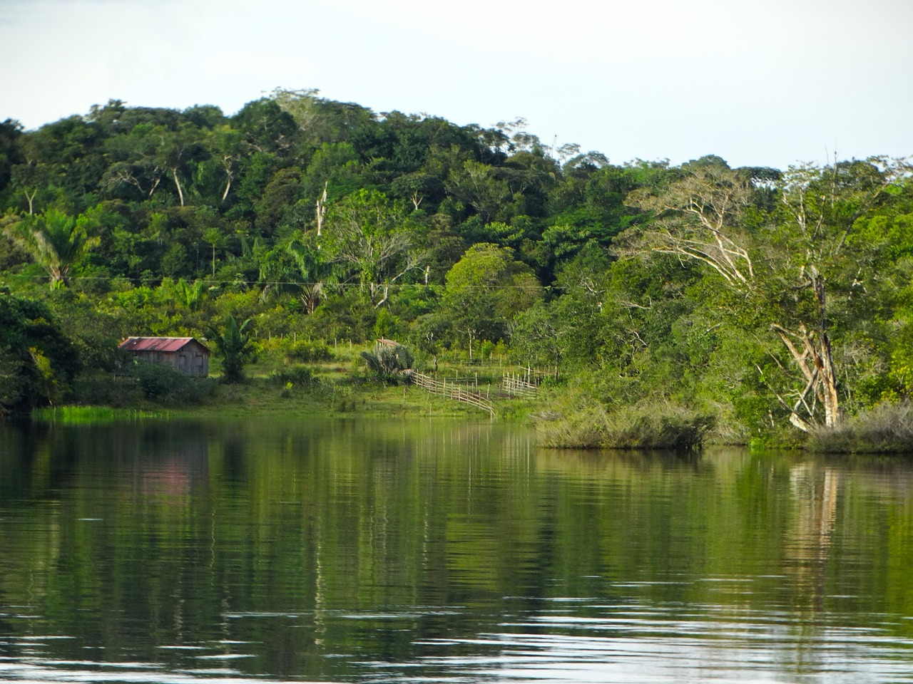

Proyecto
Introducción:
La contaminación de suelos con mercurio debido a la minería ilegal es un problema ambiental grave que afecta a numerosas regiones en todo el mundo.
La minería ilegal es una práctica extendida en muchas partes del mundo, impulsada por la demanda de minerales preciosos como el oro. Sin embargo, a menudo se realiza de manera clandestina y sin regulación, lo que conlleva consecuencias devastadoras para el entorno natural. Uno de los contaminantes más preocupantes asociados con la minería ilegal es el mercurio, un metal pesado altamente tóxico.

El mercurio es ampliamente utilizado en la minería artesanal e ilegal debido a su capacidad para amalgamar con el oro y formar una aleación que facilita su extracción. Sin embargo, esta práctica tiene un costo ambiental y humano significativo. Cuando se libera mercurio en el proceso de minería, gran parte de él se evapora y se dispersa en la atmósfera, cayendo eventualmente sobre el suelo y cuerpos de agua circundantes. Una vez en el suelo, el mercurio se convierte en metilmercurio, una forma altamente tóxica que se bioacumula en la cadena alimentaria.
La contaminación del suelo con mercurio tiene un impacto devastador en la biodiversidad local y puede afectar la salud de las comunidades cercanas. Los organismos terrestres y acuáticos que se alimentan de plantas y otros seres vivos contaminados con metilmercurio pueden acumular niveles peligrosos de este metal en sus tejidos. A medida que esta cadena alimentaria se extiende, los seres humanos que dependen de estos recursos naturales también corren el riesgo de exposición al mercurio, lo que puede tener consecuencias graves para la salud, incluyendo daños neurológicos, reproductivos y otros problemas de salud crónicos.
Esta gravedad de la contaminación del suelo con mercurio debido a la minería ilegal y resalta la necesidad urgente de abordar este problema desde perspectivas regulatorias, de conservación ambiental y de salud pública. La protección de nuestros suelos y ecosistemas es esencial para garantizar un futuro sostenible y saludable para las generaciones futuras.
Objetivo del Proyecto:
El objetivo de un proyecto de descontaminación de suelos contaminados por mercurio debido a la minería ilegal es mitigar los impactos negativos en el medio ambiente y la salud pública, restaurando la calidad de los suelos afectados y reduciendo los riesgos asociados con la exposición al mercurio.
Geolocalización:
Region Madre de Dios, Perú (Con expansión a otras regiones de Perú).
Tecnología:
El esquema tecnológico se basa en el uso de concentradores centrífugos de alto rendimiento.
El principio de funcionamiento del concentrador es la separación forzada del material procesado (suelo contaminado) en dos fracciones: "pesado" y "ligero" en un campo centrífugo. La separación del material en fracciones se produce como resultado de la interacción del flujo de agua de lavado, las fuerzas centrífugas y el campo gravitacional que actúa sobre la partícula en un rotor que gira horizontalmente. La intensidad del proceso de separación de densidad aumenta debido a las vibraciones de la capa mineral, que son causadas por la posición vertical del rotor.

El suelo contaminado se introduce en un rotor giratorio, en el que se acelera hasta una velocidad angular cercana a la velocidad del rotor. Al mismo tiempo, se suministra agua de lavado al rotor a una presión determinada. Debido a la posición vertical del eje de rotación del rotor, debido a la fuerza de gravedad, con la frecuencia de rotación del rotor se crean débiles vibraciones de la capa mineral en las direcciones axiales. Como resultado, las partículas de material con una gravedad específica mayor que un cierto valor (la fracción "pesada") bajo la influencia de la fuerza centrífuga se mueven hacia las paredes del rotor, hacia el flujo de agua de lavado, y se depositan en sus paredes. . Las partículas de material con una gravedad específica más baja (la fracción "ligera") son expulsadas hacia la superficie interna del cono y van con el flujo de agua para drenar sobre el borde del rotor. Poco a poco, debido a la sustitución de partículas ligeras por pesadas, la estructura del sedimento cambia y la fracción pesada se acumula. La eficiencia del proceso depende de la velocidad angular, la presión del agua de lavado, la clase de tamaño y la relación líquido/sólido en la alimentación”.
Etapas de Proyecto
El proceso de desmercurización del suelo requiere un enfoque sistemático y consistente. A continuación se detallan las etapas de implementación del proyecto de desmercurización:
1. Análisis y evaluación de la contaminación del suelo:
- Recogida de muestras de suelo de zonas susceptibles a la contaminación por mercurio.
- Análisis de laboratorio de muestras para determinar el nivel de contaminación y tipo de mercurio.
- Evaluación de la distribución geográfica de la contaminación y sus potenciales consecuencias.
2. Planificación y preparación:
- Desarrollo de un plan de desmercurización detallado, incluida la elección de los métodos y tecnologías a utilizar depende de región.
- Preparación del equipo de trabajo y equipamiento necesario.
3. Instalación del equipo:
- Instalación de equipos especializados como sistemas de tratamiento de agua y recolección de mercurio (zarandas, concentradores, etc.).
4. Lavado del suelo:
- Lavar el suelo contaminado utilizando soluciones o medios especializados para extraer mercurio del suelo.
- Recolección y disposición final del agua y materiales que contienen mercurio recolectados como resultado del proceso.
5. Extracción de mercurio:
- Uso de métodos para extraer mercurio.
- Almacenamiento y eliminación segura del mercurio recuperado de acuerdo con la legislación y las normas de seguridad.
6. Recultivación de suelos:
- Una vez extraído el mercurio, restablecer la calidad del suelo añadiendo materia orgánica y nutrientes.
- Crear condiciones para restaurar la actividad microbiológica natural del suelo.
7. Plantar hierbas y árboles:
- Restaurar la cubierta vegetal mediante la plantación de plantas y árboles protectores del suelo que ayuden a fortalecer el suelo y mejorar su estructura.
- Restauración de ecosistemas para mantener la biodiversidad.
8. Seguimiento y control:
- Establecimiento de un sistema de monitoreo para monitorear los niveles de mercurio en el suelo y el medio ambiente una vez finalizada la obra.
- Actualizar periódicamente las evaluaciones del estado del suelo y planificar actividades adicionales si es necesario.
9. Educación e información:
- Capacitación de las comunidades locales y trabajadores del proyecto sobre prácticas laborales seguras y principios de sostenibilidad ambiental.
- Informar al público sobre el avance del proyecto y su importancia para la protección del medio ambiente y la salud.
10. Gestión a largo plazo:
- Desarrollo de un plan de gestión y mantenimiento de las zonas de suelo rehabilitadas a largo plazo.
Beneficios para las personas y la naturaleza:
La desmercurización del suelo es un proceso que aporta importantes beneficios tanto a las personas como a la naturaleza. A continuación se presentan algunas formas clave en las que la desmercurización puede contribuir al bienestar de la humanidad y el medio ambiente:
Beneficios para las personas:
1. Protección de la salud:Uno de los principales beneficios de la desmercurización del suelo es la protección de la salud humana. El mercurio es una sustancia tóxica y su presencia en el suelo puede provocar enfermedades graves, incluidos trastornos neurológicos, daños renales y otras enfermedades. La desmercurización reduce el riesgo de estos problemas.
2. Suministro de agua potable segura: El mercurio puede pasar del suelo contaminado a cuerpos de agua, contaminando el agua y amenazando el agua potable. La desmercurización eficaz ayuda a mantener la pureza del agua y garantizar el acceso a un suministro de agua potable segura.
3. Mantener la seguridad alimentaria: El mercurio puede acumularse en plantas y animales que se alimentan de suelos contaminados. El proceso de desmercurización ayuda a prevenir la contaminación de los alimentos, garantizando así la seguridad alimentaria.

Beneficios para la naturaleza:
1. Restauración de ecosistemas: La desmercurización contribuye a la restauración de los ecosistemas naturales, ya que reduce la toxicidad del suelo y de los ecosistemas acuáticos. Esto apoya la biodiversidad y promueve la conservación de especies raras de plantas y animales.
2. Mejora de la calidad del suelo: La eliminación de la contaminación por mercurio mejora la calidad del suelo, haciéndolo más fértil y capaz de sustentar la vegetación. Esto puede ayudar a restaurar la vegetación natural y mejorar las condiciones agrícolas.
3. Preservación de los ecosistemas acuáticos: La desmercurización del suelo ayuda a proteger los ecosistemas acuáticos ya que termina menos mercurio en los cuerpos de agua. Esto, a su vez, sustenta la vida de los peces y otros organismos acuáticos y mejora la salud de los ecosistemas.
En conclusión, la desmercurización del suelo tiene efectos positivos a largo plazo sobre la salud humana y el medio ambiente. Este es un esfuerzo de importancia estratégica que promueve la sostenibilidad y la conservación de los recursos naturales para las generaciones futuras.